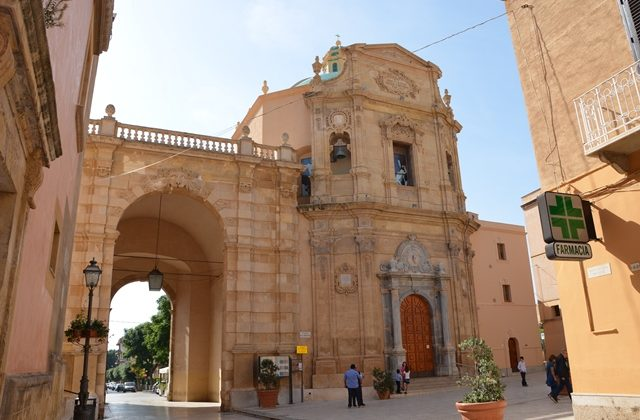

Il Ricevimento
Dopo la cerimonia, vi aspettiamo per festeggiare alla Villa Favorita, una delle ville storiche più belle della Sicilia, circondata da un magnifico parco con palme, agrumi e alberi secolari.

Ci sposiamo! 5 Settembre 2025 a Marsala
Ci uniremo in matrimonio presso il Santuario Maria Ss Addolorata di Marsala alle ore 15:30. Un luogo ricco di storia e bellezza, perfetto per celebrare il nostro giorno speciale insieme a voi.
Dopo la cerimonia, vi aspettiamo per festeggiare alla Villa Favorita, una delle ville storiche più belle della Sicilia, circondata da un magnifico parco con palme, agrumi e alberi secolari.
Approfittate del weekend per esplorare le meraviglie della città:
Per chi arriva da fuori città, consigliamo di prenotare per tempo. Per supporto su viaggio o soggiorno, contattateci!